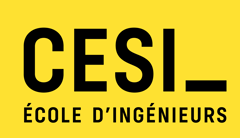

Pendant sept ans, j'ai dirigé un restaurant et sa cuisine : La Petite Cantoche, à Reims. Depuis 2025, je mets la même énergie au service des utilisateurs d'outils informatiques : des flux maîtrisés, des priorités claires, des gens satisfaits de leurs instruments de travail et protégés.
En bref
Diplôme
Gestionnaire en Maintenance et Support Informatique (GMSI), CESI Reims, obtenu en juillet 2026
Terrain
6 mois en support de proximité au CHU de Reims
Atouts
7 ans de management d'équipe et de relation client
Ce que je cherche
Des missions en support et maintenance pour gagner de l'expérience terrain, avant d'intégrer en octobre 2027 la formation Administrateur Systèmes et Réseaux BAC +3 à CESI Reims, en professionnalisation.
Mon expérience au CHU de Reims : 13 000 utilisateurs, 9 370 postes, plus de 50 000 tickets par an et 87 dispositifs de visioconférence.
Tout n'est pas technique. Un service au point, c'est un service qui satisfait ses utilisateurs et qui les protège.
Même logique, autre terrain
1Le bon arriveLire la commande, repérer les urgences de la salle.
2La mise en placeTout préparer en amont pour ne rien improviser.
3Le coup de feuCoordonner la brigade, tenir les délais et la qualité.
4Le client repart contentÉcouter le retour, ajuster pour le service suivant.
Dans les deux cas : anticiper les flux, prioriser, communiquer.
Trois tickets résolus au CHU de Reims
Service Informatique de Proximité, entre support, déploiement et logistique. Choisissez une réalisation.
Déménagement Multi-Services
À l'hôpital, les soins ne s'arrêtent pas, même en cas de déménagement : les postes doivent être prêts quand les équipes arrivent.
Résolu
≈ 250 postes
3 semaines prévues
Plusieurs services
Ce que j'ai fait
Suivi logistique du déménagement, service par service
Masterisation des postes et déploiement des logiciels via MCM
Installation des UC, écrans et périphériques, avec un câble management propre et durable
Tests de connectivité, puis aide à la prise en main des utilisateurs
Ce que j'en retiens
Un déménagement réussi, c'est une mise en place réussie : la préparation en amont évite l'improvisation le jour J.
Des services opérationnels à leur installation, et des soignants accompagnés plutôt que livrés à eux-mêmes.
Masterisation
Déploiement OS
MCM
Câble management
Support N1
Remplacer un fichier Excel par GLPI
Le stock d'un parc d'environ 10 000 postes se gérait sur Excel, avec des demandes orales et une double saisie. Résultat : du matériel déjà déployé apparaissait encore « en stock ».
Résolu
1 145 PC
500+ moniteurs
3 solutions comparées
Du fichier Excel au flux GLPI
RéceptionStockPickingUtilisateur
0 PC injectés0 moniteurs1 seule base, tracée
Avant / après : faites glisser le curseur
Données fictives, à titre d'illustration
Stock_Quai2_v3_FINAL(2).xlsx
A
B
C
D
1
Désignation
Qté
Lieu
Statut
2
PC portable 14"
12
Armoire 3
en stock ?
3
PC portabe 14"
12
armoire3
doublon
4
Écran 24"
?
sorti (oral)
5
Câble HDMI 2m
-3
Quai
stock négatif
6
Dock USB-C
4
Bureau Logistique
à vérifier
Avant · Excel
GLPI · Gestion › Stock › Quai n°2
Article
Qté
Emplacement
Statut
PC portable 14"
12
Bât. A › Stock › Armoire 3
En stock
Écran 24"
30
Bât. A › Picking › Étagère B
Disponible
Câble HDMI 2m
5
Quai › Picking
Seuil d'alerte
Dock USB-C
4
Bât. A › Stock › Armoire 1
Réservé · ticket
Historique : 1 Écran 24" sorti par Technicien 04 pour le ticket « Demande de matériel », Cardiologie.
Après · GLPI
1Comprendre
Entretiens avec les acteurs concernés
Cahier des charges rédigé avec le service Logistique
Benchmark et maquettes : GreaterWMS, Snipe-IT, GLPI
2Choisir
Open source, sans coût de licence
Hébergé sur site, conforme au RGPD
Aligné sur ITIL, et sans concurrence avec l'outil maison du CHU
Plugins GestStock, Barcode et DataInjection, seuils d'alerte
Nouveau circuit : ticket « Demande de matériel » priorisé, puis retrait en espace pick-up
Tout l'inventaire et le stock ont été injectés dans GLPI : 1 145 PC et plus de 500 moniteurs. Une source de vérité unique, partagée entre techniciens et logistique, où chaque mouvement est tracé et une alerte part avant la rupture de stock.
GLPI 11
Ubuntu Server
LAMP
ITIL
Cahier des charges
Benchmark
Des visioconférences qui ne plantent plus
Freezes, latences, perte du son ou de l'image. Plusieurs interventions sans résultat, et un redémarrage comme seule réponse. Côté utilisateurs : du stress à chaque réunion.
Résolu
35 barres Logitech synchronisées
4 livrables
Mini-jeuÀ vous de jouer : trouvez la panne
Ticket entrant
« La visio de la salle de réunion freeze encore ! » Image figée, son coupé, en pleine réunion. Plusieurs interventions déjà, sans succès. Que testez-vous ?
Le diagnostic, étape par étape
Écoute de l'utilisateurPhysique : ventilation, alimentation, câblageRéseau : perte de paquets, QoSApplicatif : Teams et autres logicielsCause : firmware jamais mis à jour
Le vrai problème
Le cas isolé cachait un problème global : un parc hétérogène, sans procédure de dépannage, sans matériel de rechange, et des services qui travaillaient en silo.
Ce que j'ai livré
Logitech Sync35 barres Logitech rattachées à leur emplacement, mises à jour et supervisées à distance. Les autres dispositifs, d'autres marques, sont hors de son périmètre.
Une noticeLa procédure de mise à jour des différents systèmes de visio.
Une étudeL'intérêt d'un parc homogène : coûts, maintenance, facilité d'usage.
Un inventaire GLPILes systèmes de visio recensés, comme appui auprès du service des achats.
On passe d'une maintenance curative (« on redémarre ») à une gestion préventive et centralisée.
Logitech Sync
Cause racine
QoS
Microsoft Teams
GLPI
Documentation
Mon labo à la maison
Pour apprendre, rien ne vaut la pratique. Derrière ma box, j'administre mon propre petit réseau. Cliquez sur un élément pour voir son rôle.
NAS sous ZimaOS
Choisissez un élément
Chaque brique a une raison d'être : apprendre, sécuriser, ou rendre service au quotidien.
Pourquoi un labo ?
C'est mon terrain d'entraînement. J'y teste en conditions réelles ce que j'apprends, sans risquer la production de qui que ce soit.
Réseau. Un routeur derrière la box opérateur, pour garder la main sur l'adressage et le Wi-Fi.
Sécurité. Un DNS filtrant pour tout le foyer et un pare-feu sur le NAS : protégé par défaut.
Auto-hébergement. Des services utiles au quotidien, sans dépendre d'un cloud tiers.
En cours. Un hyperviseur KVM sur un vieux portable pour monter un Windows Server : Active Directory, DNS, GPO. De quoi préparer la formation ASR.
De la brigade au support
Une reconversion qui a du sens : j'ai changé d'outils, mais je fais toujours un métier de service.
RestaurationInformatique
2016
CAP Cuisine
Lycée Louis Darmanté. Hygiène, techniques de la gastronomie française, et le goût de la rigueur.
2016 – 2018
Cuisinier itinérant
Perfectionnement technique, et découverte de nombreuses organisations de production.
2018 – 2025
Chef et gérant
La Petite Cantoche. Gestion opérationnelle, administrative et commerciale. Management de toute l'équipe, relation client au quotidien.
2025
Le déclic : l'informatique
Après le choc post-Covid et l'inflation, le restaurant ferme. Je reviens à une passion d'enfance, nourrie par Science & Vie et les programmes BASIC qu'on recopiait.
Janv. – juil. 2026
Stage au CHU de Reims
Direction des Services Numériques. Support N1, déploiements, déménagements de services, projets GLPI et visioconférence.
Juillet 2026

Diplômé GMSI
CESI Reims, formation financée par la Région Grand Est. Soutenance réussie : support utilisateur, déploiement et administration d'un parc.
Aujourd'hui
Des missions sur le terrain
Disponible dès maintenant. Support, maintenance, déploiements, déménagements de parc : j'accumule de l'expérience concrète.
Octobre 2027
Administrateur Systèmes et Réseaux
Bac+3 au CESI, en contrat de professionnalisation. À plus long terme, retrouver des fonctions de management et piloter des projets centrés sur les utilisateurs.
Ma boîte à outils
Les savoir-faire techniques acquis en formation et au CHU, et ce que sept ans de cuisine m'ont appris.
Côté technique
Support et parc
Support N1
Diagnostic matériel
Masterisation
Déploiement OS
MCM
Périphériques
Câble management
Déménagements
Outils ITSM
GLPI 11
GestStock · Barcode
Ticketing
Logitech Sync
Inventaire
Notices
Systèmes et réseaux
Windows
Ubuntu Server
LAMP
DNS
Pare-feu
QoS
KVM
Windows Server (en cours)
Méthodes
ITIL 4
Cahier des charges
Benchmark
Analyse de cause racine
Documentation
Ce que la cuisine m'a appris
Communication
Relation utilisateur
Management d'équipe
Gestion des flux
Autonomie
Sang-froid au coup de feu
Force de proposition
Langues. Français, langue maternelle. Anglais courant, à l'oral comme à l'écrit. Espagnol : je suis à l'aise pour suivre une conversation.
Une mission support ou maintenance ? Je suis à disposition !